Handmade Objects
Italian-Style Gilt Bronze Urn with Putto Handles, 19th-Century Taste
· 20th century
Price Upon Request

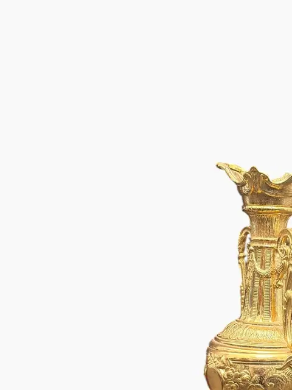
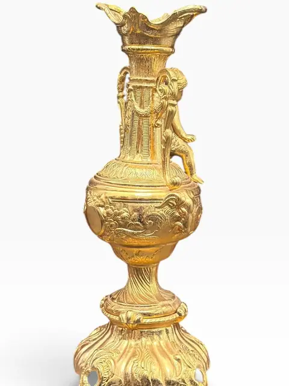
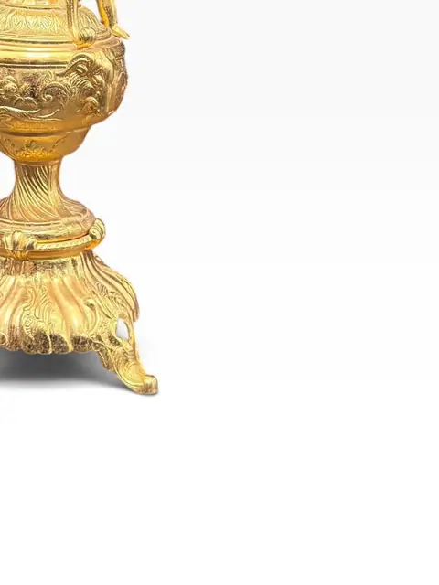
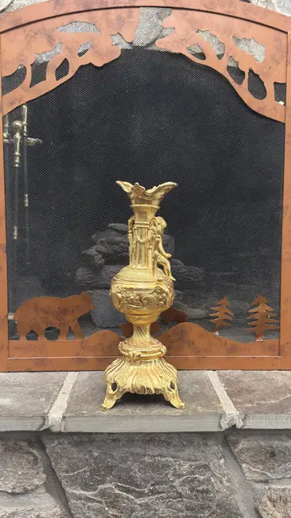
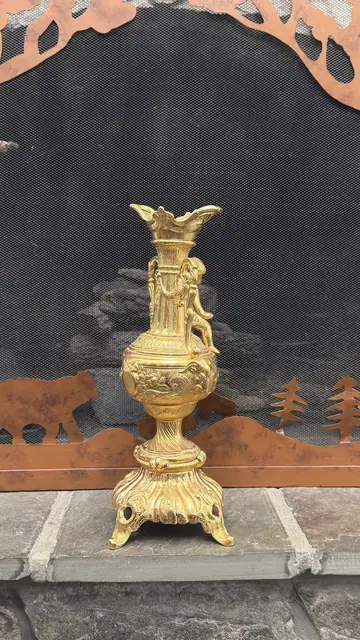
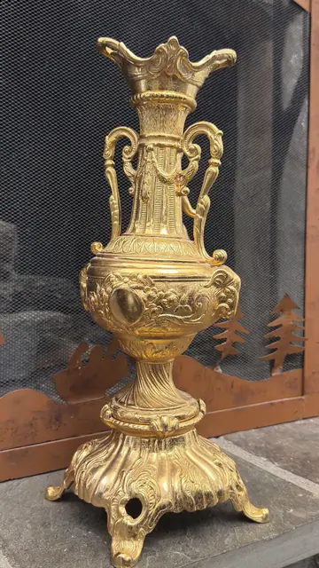
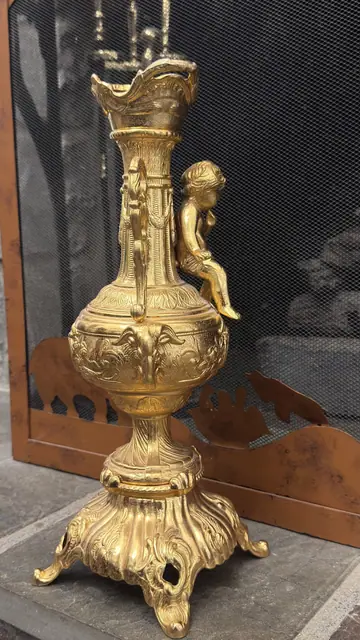
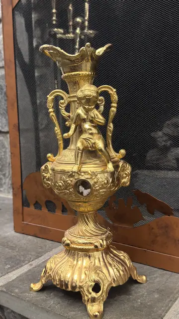
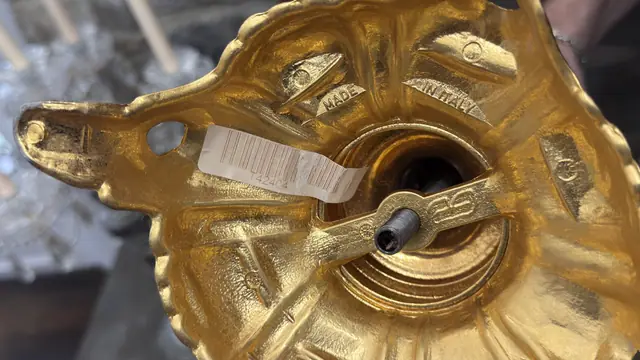
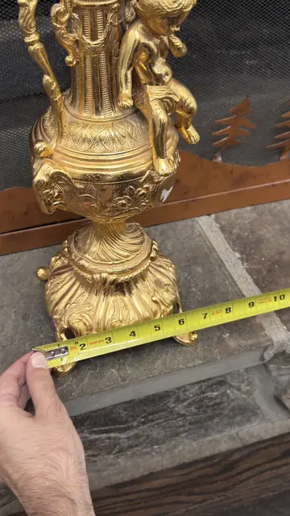
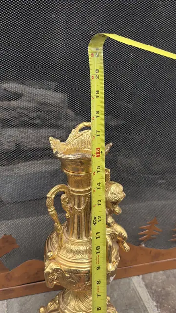
About the Item
An ornate gilt-bronze urn in the Italian 19th-century taste, its baluster body chased with scrolling foliage and flanked by handles modelled as playful putti. Raised on a spreading gadrooned foot with paw supports and crowned by a flared, shaped rim. A bold sculptural accent for a classical or maximalist interior. Dimensions: H approx. 15 in (38 cm); W approx. 7 in (18 cm) - approximate, from tape photos Origin and date uncertain: could be late-19th-century Continental or a 20th-century Italian-style casting. No foundry marks observed. Described conservatively as 'Italian style'.
Details
- Creation Year:
- 20th century
- Medium:
- Gilt bronze
- Period:
- 20Th
- Condition:
- Offered in the condition shown in the photographs.
- Reference Number:
- VO-391